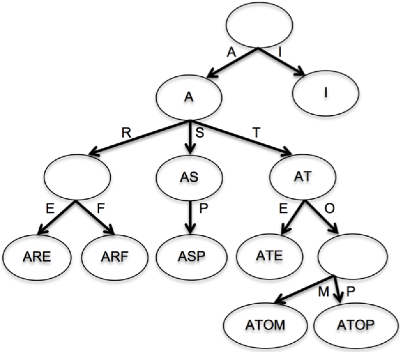

The trie data structure (initially pronounced “tree” as the middle syllable of retrieval, but now universally pronounced “try” to avoid confusion) is useful in scenarios usually reserved for a hash, but it is best known for its power to predict – particularly auto-complete. Let’s examine the trie conceptually.

As shown in the diagram, a trie is a set of connected nodes. The root node represents the empty string “”; from that node, there can be many pointers to other nodes. Each pointer+node represents the addition of a letter to that sequence. If the sequence of letters adds up to a word, then the word is stored within the node as well. If not, it still exists in the trie if it is needed for another, longer word (like the ‘R’ node below the top-level ‘A’). Because each node represents a unique word, two parent nodes can never point to the same child node – although ‘ATE’ and ‘ARE’ are both in our trie, the ‘AR’ node and the ‘AT’ node point to different children for an additional ‘E’.
Nodes are added only when they are needed to store a word – the diagram above represents the words “a”, “are”, “arf”, “as”, “asp”, “at”, “ate”, “atom”, “atop” and “I”. If we were to add the word “asps”, a pointer representing “s” would extend from the “ASP” node to a new node containing “ASPS”. If we add the word “ar”, a node already exists at the appropriate location, so “AR” would be stored into the node.
Codewise, a TrieSet object is quite similar to a basic binary tree object: it contains a single attribute – a pointer to the root node – plus the instance methods. Each TrieNode object contains an optional node value, plus an array of pointers. This array is initially empty but can hold as many pointers as there are letters in the alphabet. If we choose to lower-case all the strings that we hold in our TrieSet, then each node’s array could contain as many as 26 pointers. Again, each pointer+node represents the addition of a specific letter to the sequence of letters from the root up to that node.
To add a word to our trie, we iterate each letter, following the appropriate pointer for that letter. If the node’s array has no pointer there, we create a node, write it to the array location and proceed. When we reach the last letter, we save the word in the node, signifying that it is terminal, not intermediate.
Chapter 16 – Tries
After walking through a trie in both concept and code, hopefully you see how tries might enable one to predict the word, given the first few letters! Implement the following challenges to create a TrieSet:
Trie: Insert
After building simple TrieSet and TrieNode constructors, create an add method to insert a string to the set. For our purposes, assume that input strings will be letters only – no numerals or punctuation. Also, you can convert inputs to lowercase before storing them. Return false if word has already been stored (after all, it’s a TrieSet not a TrieMultiSet!), or true if insertion is successful. Tries are treelike (not a purely linear one like a linked list), so recursion at the node level is a reasonable choice.
Trie: Contains
Create a TrieSet method to check whether a given string is present within the set. Again, you can assume that all inputs are letters-only; you can also convert all strings to lowercase. Return true if word is found, false if not.
Trie: First
Tries are reasonable substitutes for Hashes, yet they retain order! Build a method to return trie’s first value. First means lowest-alphabetically, not earliest-added. N.B.: "Todd" comes before "toddy".
Trie: Last
Return its last value. "Kelvin" comes after "kelp".
Trie: Remove
Construct a method in TrieSet class that removes a given string from our set. As earlier, safely assume that all input strings will contain only letters (not numerals or punctuation). Also, lowercase all strings before storing or checking for them. When removing trie values, remember that in some cases you need to remove a terminal TrieNode. You may potentially need to remove certain ancestor intermediate nodes. Make sure to return true on a successful removal, false if string not found.
Second: Incorporate punctuation and case-sensitivity across the TrieSet class. Suggestion: the 95 typeable characters on a keyboard have consecutive charCode values, starting with [space].
Chapter 16 – Tries
Today, finish TrieSet. Auto-complete is used by search engines and mobile devices.
Trie: Size
Return the number of values added to the TrieSet. There are two valid ways to implement this method – can you come up with both? In which usage cases would you prefer one over the other?
Trie: Next
Given a string that might not be in the trie, return the contained string that is immediately subsequent. Hashes don’t do well with this, but tries can! Return null if there is no subsequent string.
Trie: Auto Complete
Assume your trie is populated with a wide array of valid words. Given string (presumably what user typed so far), use your trie to rapidly return an array of words beginning with that string.
Second: augment autoComplete(str) to accept maxResults, and return at most that many.
Chapter 16 – Tries